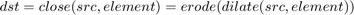

Advanced Morphology Transformations Demo
In this sample you will learn how to use the OpenCV function cv.morphologyEx to apply Morphological Transformation such as:
- Opening
- Closing
- Morphological Gradient
- Top Hat
- Black Hat
Sources:
- https://docs.opencv.org/3.2.0/d3/dbe/tutorial_opening_closing_hats.html
- https://github.com/opencv/opencv/blob/3.2.0/samples/cpp/tutorial_code/ImgProc/Morphology_2.cpp
- https://github.com/opencv/opencv/blob/3.2.0/samples/cpp/morphology2.cpp
- https://github.com/opencv/opencv/blob/3.2.0/samples/python/morphology.py
Contents
Theory
We previously covered two basic Morphology operations:
- Erosion
- Dilation
Based on these two we can effectuate more sophisticated transformations to our images. Here we discuss briefly 5 operations offered by OpenCV.
1) Opening
It is obtained by the erosion of an image followed by a dilation.
Useful for removing small objects (it is assumed that the objects are bright on a dark foreground). For instance, check out the example below. The image at the left is the original and the image at the right is the result after applying the opening transformation. We can observe that the small spaces in the corners of the letter tend to dissapear.

For the sake of clarity, we have performed the opening operation (7x7 rectangular structuring element) on the same original image but inverted such as the object in white is now the letter.

(Left image: original image inverted, right image: resulting opening).
2) Closing
It is obtained by the dilation of an image followed by an erosion.

Useful to remove small holes (dark regions).

On the inverted image, we have performed the closing operation (7x7 rectangular structuring element):

(Left image: original image inverted, right image: resulting closing).
3) Morphological Gradient
It is the difference between the dilation and the erosion of an image.
It is useful for finding the outline of an object as can be seen below:

4) Top Hat
It is the difference between an input image and its opening.

5) Black Hat
It is the difference between the closing and its input image

References
- "Learning OpenCV" by Bradski and Kaehler.
function varargout = morphology_demo_gui2(im) % load source image if nargin < 1 src = imread(fullfile(mexopencv.root(),'test','img001.jpg')); elseif ischar(im) src = imread(im); else src = im; end % create the UI h = buildGUI(src); if nargout > 0, varargout{1} = h; end end function onChange(~,~,h) %ONCHANGE Event handler for UI controls % retrieve current values from UI controls ksize = round(get(h.slid, 'Value')); opIdx = get(h.pop(1), 'Value'); shapeIdx = get(h.pop(2), 'Value'); set(h.txt, 'String',sprintf('%2d',ksize)); % options (structuring element shape and morphological operation) shapes = {'Rect', 'Cross', 'Ellipse'}; types = {'Erode', 'Dilate', 'Open', 'Close', 'Gradient', 'Tophat', ... 'Blackhat', ''}; % apply the specified morphology operation elem = cv.getStructuringElement('Shape',shapes{shapeIdx}, ... 'KSize',[ksize ksize]*2+1, 'Anchor',[ksize ksize]); if ~isempty(types{opIdx}) dst = cv.morphologyEx(h.src, types{opIdx}, 'Element',elem); else dst = h.src; end % show result set(h.img, 'CData',dst); drawnow; end function h = buildGUI(img) %BUILDGUI Creates the UI % parameters ksize = 3; max_ksize = 21; sz = size(img); sz(2) = max(sz(2), 250); % minimum figure width % build the user interface (no resizing to keep it simple) h = struct(); h.src = img; h.fig = figure('Name','Morphology Transformations Demo', ... 'NumberTitle','off', 'Menubar','none', 'Resize','off', ... 'Position',[200 200 sz(2) sz(1)+29]); if ~mexopencv.isOctave() %HACK: not implemented in Octave movegui(h.fig, 'center'); end h.ax = axes('Parent',h.fig, 'Units','pixels', 'Position',[1 30 sz(2) sz(1)]); if ~mexopencv.isOctave() h.img = imshow(img, 'Parent',h.ax); else %HACK: https://savannah.gnu.org/bugs/index.php?45473 axes(h.ax); h.img = imshow(img); end h.pop(1) = uicontrol('Parent',h.fig, 'Style','popupmenu', ... 'Position',[5 5 70 20], 'Value',3, ... 'String', {'Erosion','Dilation','Opening','Closing','Gradient',... 'Top Hat','Black Hat','-None-'}); h.pop(2) = uicontrol('Parent',h.fig, 'Style','popupmenu', ... 'Position',[75 5 70 20], 'String',{'Rect','Cross','Ellipse'}); h.slid = uicontrol('Parent',h.fig, 'Style','slider', 'Value',ksize, ... 'Min',1, 'Max',max_ksize, 'SliderStep',[1 5]./(max_ksize-1), ... 'Position',[150 5 sz(2)-150-20-5 20]); h.txt = uicontrol('Parent',h.fig, 'Style','text', 'FontSize',11, ... 'Position',[sz(2)-20-5 5 20 20], 'String',num2str(ksize)); % hook event handlers, and trigger default start set([h.slid, h.pop], 'Callback',{@onChange,h}, ... 'Interruptible','off', 'BusyAction','cancel'); onChange([],[],h); end